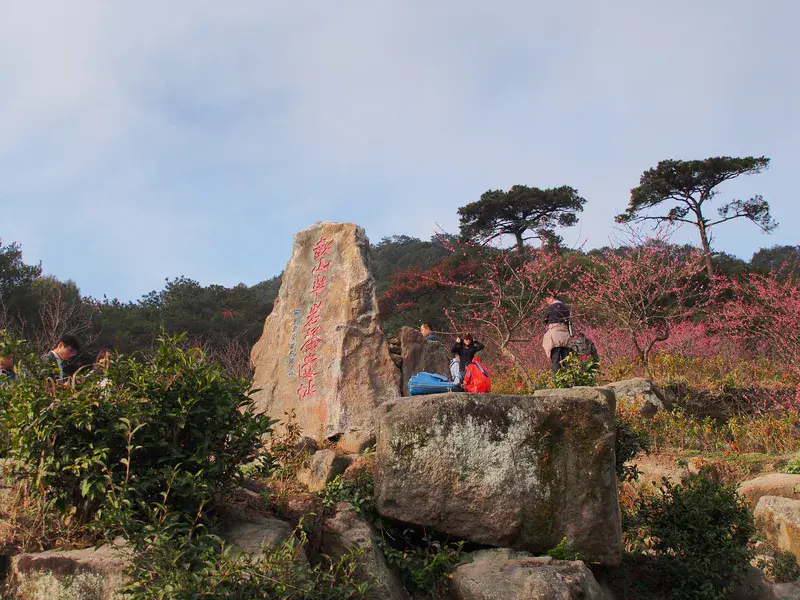
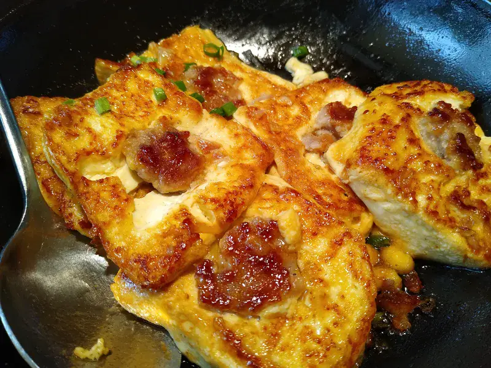
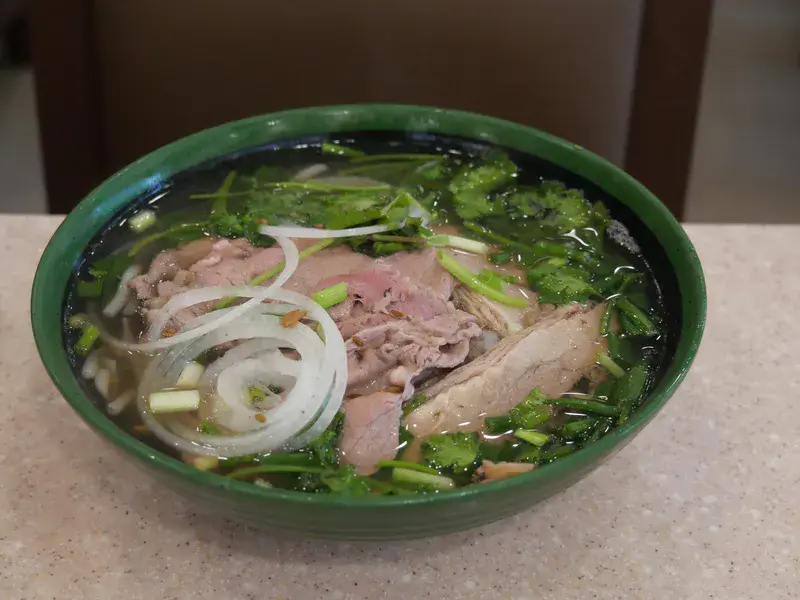
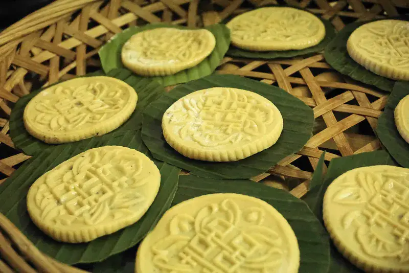

🍵 岩茶
Rock tea — Da Hong Pao, Shuixian, Rougui; the 'rock bone and floral fragrance' of Wuyi.
💡 茶博园品鉴
武夷山必吃美食，特色小吃一网打尽

Rock tea — Da Hong Pao, Shuixian, Rougui; the 'rock bone and floral fragrance' of Wuyi.
💡 茶博园品鉴
Langu smoked goose — Wuyi-cured, with a smoky, gently spicy edge.
💡 岚谷镇

Wengong dish — from Zhu Xi's family banquet, braised pork meatballs.
💡 景区餐馆

Guozi — steamed rice-flour nibbles dressed in savory gravy.
💡 街边
Tea-oil rice-flower fish — paddy fish braised in camellia oil, fragrant and fresh.
💡 农家

Filial-mother cake — a Zhu Xi filial-piety themed pastry with sesame filling.
💡 伴手礼